Publication
Mueller, S., Fritzsche, M., Kossmann, J., Schneider, M., Striebel, J., and Baudisch, P.
Scotty: Relocating Physical Objects Using Destructive Scanning, Encryption, and 3D Printing.
In Proceedings of TEI ’15, pp. 233-240.
Demo at TEI'15
DOIPaperVideo
Press
Scotty:
Relocating Physical Objects Using Destructive Scanning, Encryption, and 3D Printing.
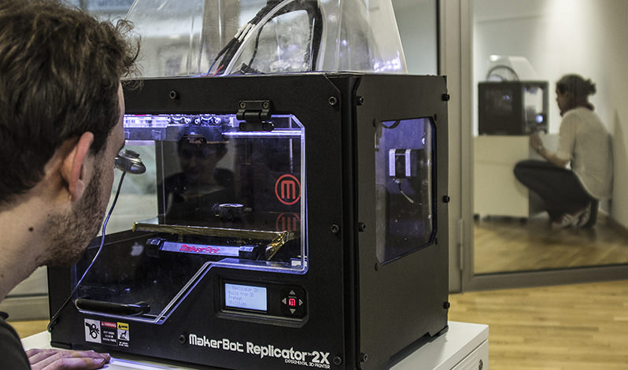
Scotty is a simple self-contained appliance that allows teleporting inanimate physical objects across distance. Each unit consists of an off-the-shelf 3D printer that we have extended with a 3-axis milling machine, a camera, and a microcontroller for encryption/decryption and transmission. Users place an object into the sender unit, enter the address of a receiver unit, and press the teleport button. The sender unit now digitizes the original object layer-by-layer: it shaves off material using the built-in milling machine, takes a photo using the built-in camera, encrypts the layer using the public key of the receiver, and transmits it. The receiving unit decrypts the layer in real-time and starts printing right away. Users thus see the object appear layer-by-layer on the receiver side as it disappears layer-by-layer at the sender side. Scotty is different from previous systems that copy physical objects, as its destruction and encryption mechanism guarantees that only one copy of the object exists at a time.
Even though our current prototype is limited to single-material plastic objects, it allows us to address two application scenarios: (1) Scotty can help preserve the uniqueness and thus the emotional value of physical objects shared between friends. (2) Scotty can address some of the licensing issues involved in fast electronic delivery of physical goods.
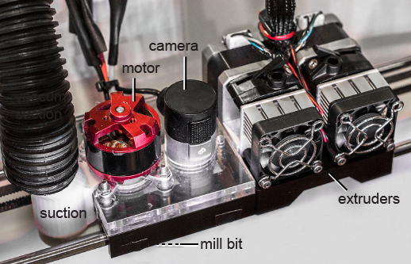
Figure 2: The standard MakerBot carriage carries two extrusion units. To allow it to destructively scan a physical object, we added a simple mill and a camera.
Background
When combined with 3D scanning, 3D printing allows converting physical objects to a digital state and back. While in digital form, users can share objects with others and as a result, many envision a future in which any object will be available to anyone anywhere anytime. Some researchers in psychology, however, have looked at the sharing of physical objects from a different perspective. They question whether replicating an object is always desirable, as additional copies affect the uniqueness and thus the emotional value of a physical object (see Hood and Bloom’s work on duplication psychology). Consequently, they speculate whether the value of an object might not be better preserved if one were able to send the object by “teleporting” it, rather than by copying. Unfortunately, all these studies were carried out as wizard-of-oz experiments or written scenarios as no functional system existed. With this research project, we demonstrate a simple, yet functional device that allows us to teleport inanimate physical objects by means of destructive scanning, encryption, and remote 3D printing.
Sending an Object with Scotty
The following images show a user teleporting a personal object, here a handcrafted necklace pendant.
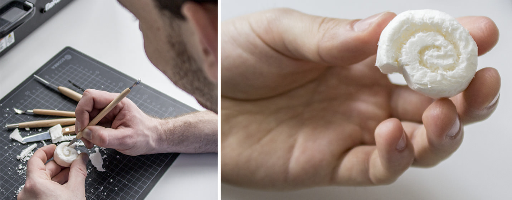
Figure 3: A handcrafted snail necklace pendant that should be send to the other side.
As illustrated in the image below, the user starts by dipping the pendant into fast-drying black paint. This generates visual contrast for the subsequent optical scanning step, i.e. only the currently milled away surface will appear white to the camera, and the remaining part remains black. The user places the pendant into the sender unit, selects the Scotty unit to send to from the display, and presses the teleport button. This causes the sender unit to digitize the object layer-by-layer, i.e., a repeated process of shaving off a layer, taking a photo of it, encrypting it, and sending it.
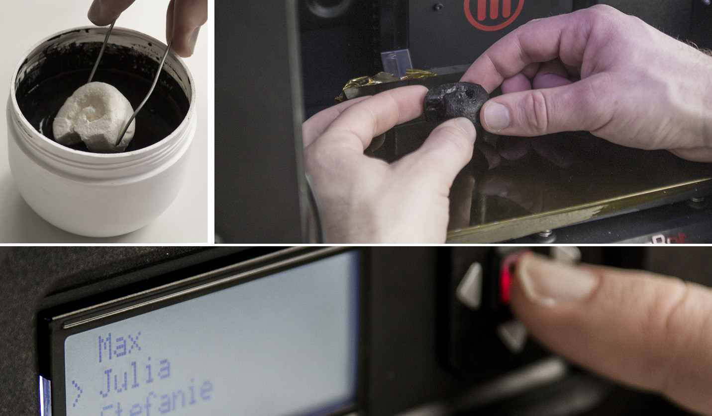
Figure 4: To teleport this pendant: the sender dips it in black paint, mounts it into the sender unit by placing it on double-sided adhesive tape, selects the receiver name and presses the teleport button.
While the sender unit is still digitizing, the receiver unit starts receiving the object. It decrypts each layer and starts printing right away. Users thus see the object appear layer-by-layer on the receiver side as it disappears layer-by-layer at the sender side, until complete.
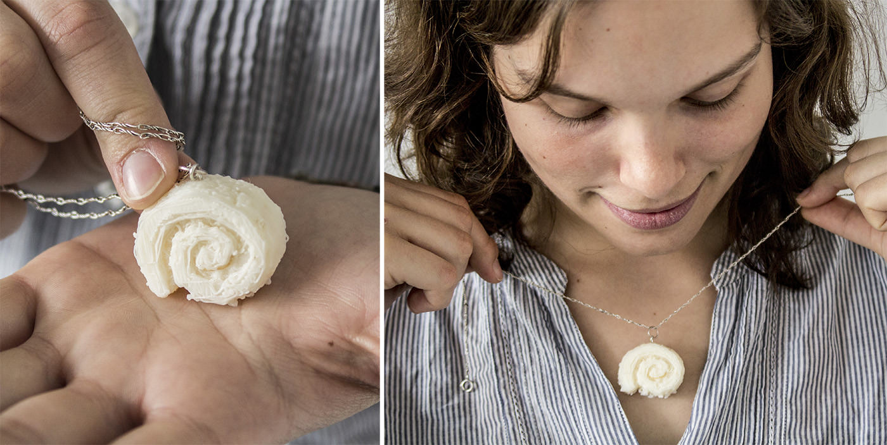
Figure 5: The received necklace pendant.
How it works from the technical side
The picture below shows Scotty’s built-in milling machine shaving off a layer of material. Scotty moves the mill across the object using the same 3-axis mechanism that the MakerBot uses to move the extruder. The mill bit is aligned with the extruder heads to prevent the mill from cutting into the base plate of the MakerBot.
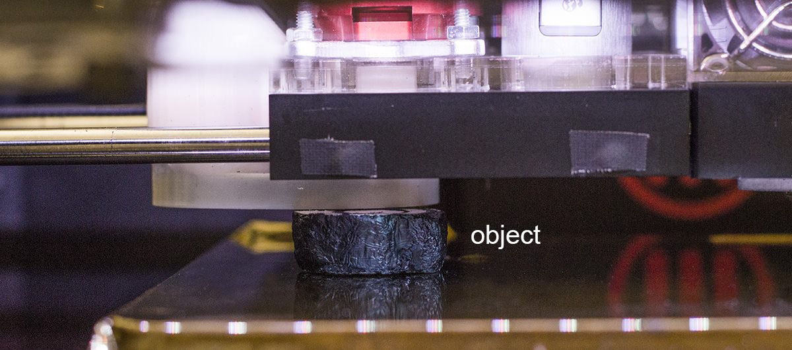
Figure 3: Here Scotty is digitizing an object by moving its mill across the object coated in black paint.
Between layers, Scotty lowers the base plate that holds the object. This moves the object away from the carriage, allowing Scotty’s down-facing camera to take a picture of the object’s top surface (see image below). The object’s black coating helps to provide good contrast against the object’s off-white material. Scotty optimizes image quality by illuminating the object using the MakerBot’s built-in LED strip. Scotty then encodes the captured image in .png format, encrypts it, and sends it to the other side. The receiver unit binarizes the image and extracts the object contour using the connected components algorithm (OpenCV). It then triangulates the 2D polygon, generates a 3D mesh of the layer by using the same polygon as top and bottom surface. It then sends the 3D mesh to the MakerBot’s slicer, which generates 3D printing instructions in g-code and prints them.
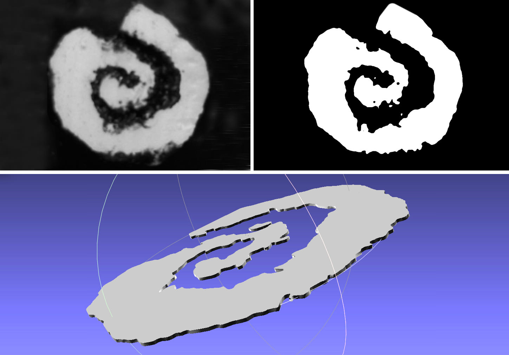
Figure 4: Scanning and 3D reconstruction process: (a) photo of one layer, (b) after thresholding, (c) reconstructed 3D model of the layer.
How Scotty ensures uniqueness
As discussed in the introduction, the key property of teleporting an object is that it guarantees the uniqueness of the object, i.e., that only one instance of the object exists at all times. This means that Scotty has to guarantee that neither the sender, nor the receiver, nor any person in the middle is able to keep or produce an additional copy.
Scotty achieves this across the three individual steps involved in teleporting: (a) scanning: Scotty destroys the physical original during scanning. This does not only ensure that the object on the sender side disappears, but is also necessary to obtain a true volumetric scan of the object, unlike traditional (non-destructive) methods that reproduce only the façade of an object. (b) transmission: Scotty prevents men-in-the-middle from fabricating a copy of the object by encrypting the object using the receiver’s public key. (c) re-fabrication: Scotty prevents the receiver from making multiple copies by maintaining an eternal log of objects already fabricated, which allows it to refuse the reprinting of objects.
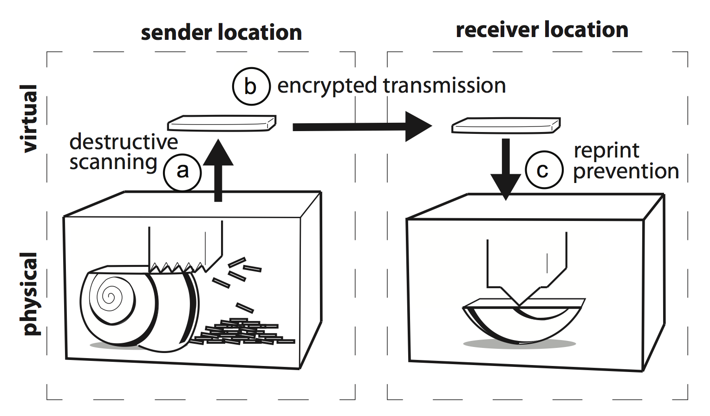
Figure 3: Scotty assures that never more than one pendant can exist at a time by (a) destroying the necklace during scanning, (b) encrypting it during transmission, and (c) preventing reprinting,
A crucial feature of Scotty is that it is an encapsulated appliance. During teleportation, the object data is inherently non-encrypted (1) at the moment of scanning and before encryption and (2) at the moment of re-fabrication, i.e., after decryption. If users were able to gain access to the data at these stages, they would be able to print copies of the object, compromising its uniqueness. Scotty addresses these issues by forming a single encapsulated (and if commercially manufactured sealed) device, with all processing happening inside the device. This allows Scotty to perform “scanning-and-encryption” in one step inside the device and “decryption-and-fabrication” in one step inside the device, as suggested by the dashed lines in the image above. This prevents the undesired access, thereby protecting the object’s uniqueness.
Two Application Scenarios
The fact that our devices preserve uniqueness throughout the teleportation process (unlike systems that copy physical objects) allows us to create two new application scenarios:
Application Scenario 1: Scotty keeps personal objects unique.
As in the example shown earlier, Scotty guarantees that a personal, hand-made gift remains unique when sent across distances, i.e., that there is no other copy—an important aspect that emphasizes the intimate relationship between sender and receiver.
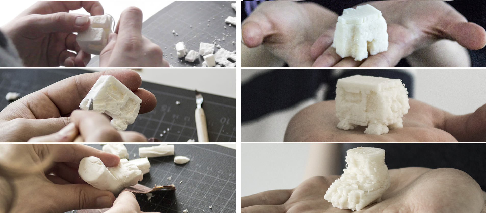
Figure 3: Scotty keeps personal objects unique. In a small-scale qualitative user study three couples sent personal handcrafted objects to each other.
Application Scenario 2: Scotty reduces licensing issues in online sales of used goods.
As fabrication technology advances to the point where we can make functional copies of designed objects, replication of a purchased object starts to raise licensing issues. Imagine a seller of an online auction site, such as eBay, offers a used copy of the cleverly designed stand for a computer tablet shown in the image below for sale. With instantaneous payment systems such as online banking already in place, the buyer may want to receive the object the very moment he or she completes the auction—by receiving the object electronically and fabricating it locally.
This raises licensing issues since the particular design of the iPad stand is currently sold on the web for $15. If a user replicates the object using $2 worth of 3D printing material, the designer misses out on being paid for the $13 worth of “design” contained in the object. This point will get raised more often as the debate around the intellectual property and licensing of 3D objects is heating up [11] and it will make it difficult to switch from slow postal delivery to fast electronic delivery based on local personal fabrication.
Scotty addresses this issue. When the seller sends the object through Scotty, the system guarantees that the seller’s object ceases to exist the moment the buyer receives it, i.e., Scotty allows transferring objects quickly without infringing on designers’ rights to be paid for their designs
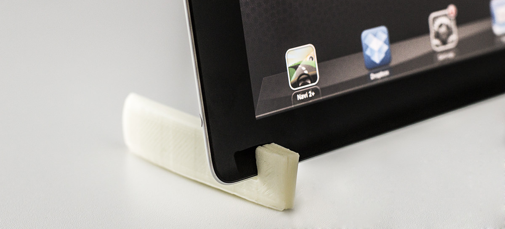
Figure 4: Selling a designed iPad stand on an online auction site. By teleporting the object to the buyer using Scotty, the buyer receives the object quickly and prevents the seller from infringing on the designer’s rights.
Technical Details / Explosion Drawings
We extended the MakerBot Replicator 2X with a RaspberryPi processor board runs Scotty’s software. A USB hub connected to the RaspberryPi contains the cable for the MakerBot, the camera, and the Arduino that controls the mill. A switch-mode power supply for powering the mill. All components are mounted to the bottom of the MakerBot. Normally, all components are enclosed in the MakerBot’s bottom casing; the photograph was taken with this cover removed.
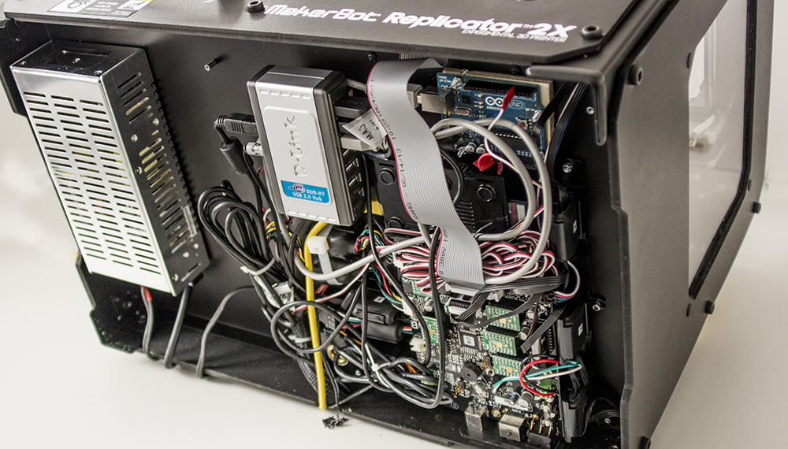
Figure 3: The Scotty hardware enclosed in the bottom of the MakerBot: RaspberryPi, USB hub with camera, Arduino for controlling the mill, mill power supply, Ethernet cable.Digitization using mill and camera
Below is an image of an exploded view of the carriage extension that holds our digitizing apparatus consisting of a custom mill and a camera. We rigidly coupled the second carriage to the MakerBot’s standard extruder carriage; this allows Scotty to actuate the mill using the same mechanism that moves the extruder heads. To minimize friction, the carriage rests on four linear ball bearings (LM8SUU). A custom laser cut assembly attaches the milling head and the camera (model: MSLifeCam) to the top of the carriage.
The mill itself uses a fast-turning, low-torque brushless motor (KV890) as they are commonly used in quad copters. In Scotty, it drives a two-sided flat milling head.
The 3D printed nozzle on the left of Figure 13 allows connecting a shop vacuum cleaner. The 3D printed part redirects the suction to the mill head to provide cooling and to make sure milled-off chips are removed from the object’s top surface before Scotty captures the next picture.
Scotty moves the milling head by sending g-code commands to the MakerBot API. Scotty uses that same API to move the object into the focus plane of the camera and to control the MakerBot’s LED strip.
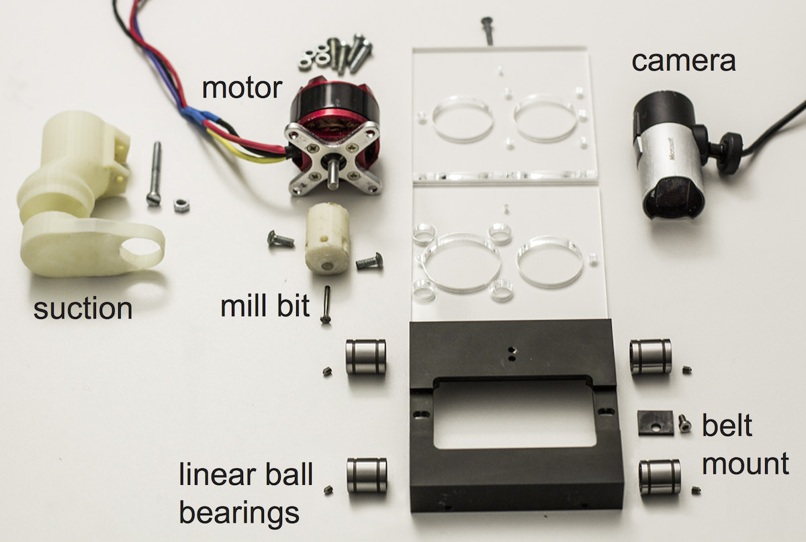
Figure 3: Exploded view of the milling carriage.
Encryption and transmission
Scotty encrypts the thresholded binary image using the ecliptic curve cryptography implementation of the libsodium library. Scotty transmits the data via a TCP connection to the receiver (for easy control we use a TCP abstraction layer called zmq4). For decryption, Scotty again uses the libsodium library.
Re-fabrication
Scotty converts the threshold image into a 2D polygon using OpenCV’s contour detection. It then triangulates the 2D polygon using Seidel’s algorithm from the poly2tri library. Scotty’s code then triangulates the polygon and transforms it into a 3D object using the polygon as the bottom and top surface and closing the space between with a triangle strip. The generated 3D mesh is written into an .stl file, which Scotty sends to the MakerBot’s slicer (called miraclegrue). Scotty overwrites the slicer’s default z-position (normally the base of the platform) so as to reflect the number of layers already printed.
Transmit at once
Objects with overhanging structures require support material in order to be printed. To support such objects, Scotty offers a “transmit as a whole” option in the MakerBot display. If this option is active, Scotty delays 3D printing until the entire object has been received, allowing the receiver unit to generate support material.